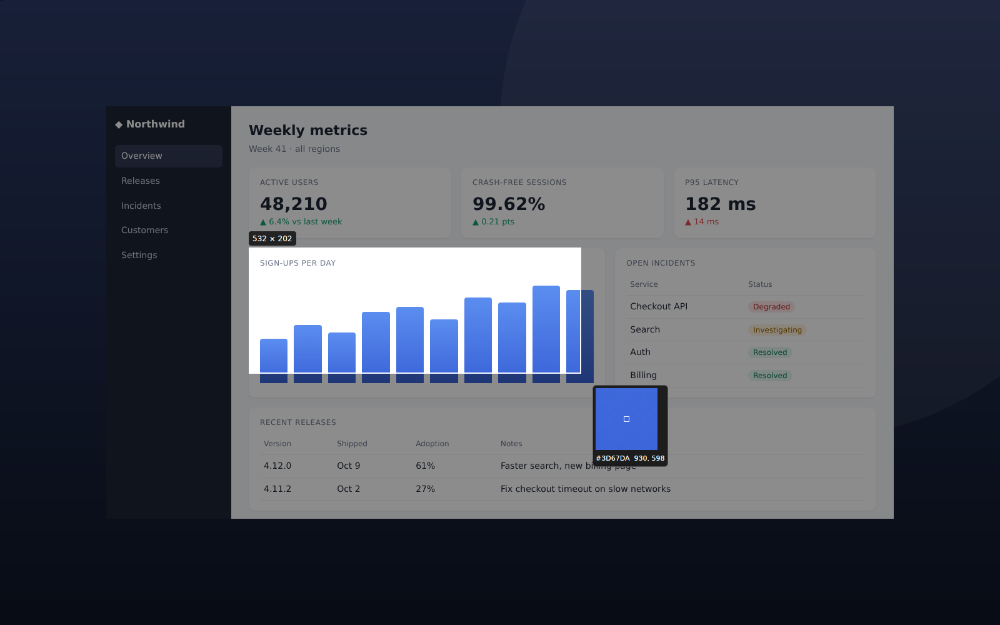
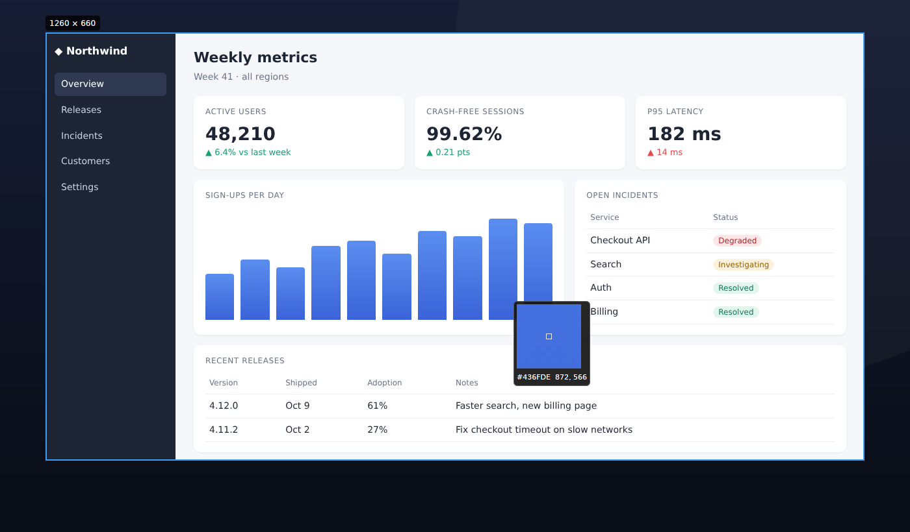
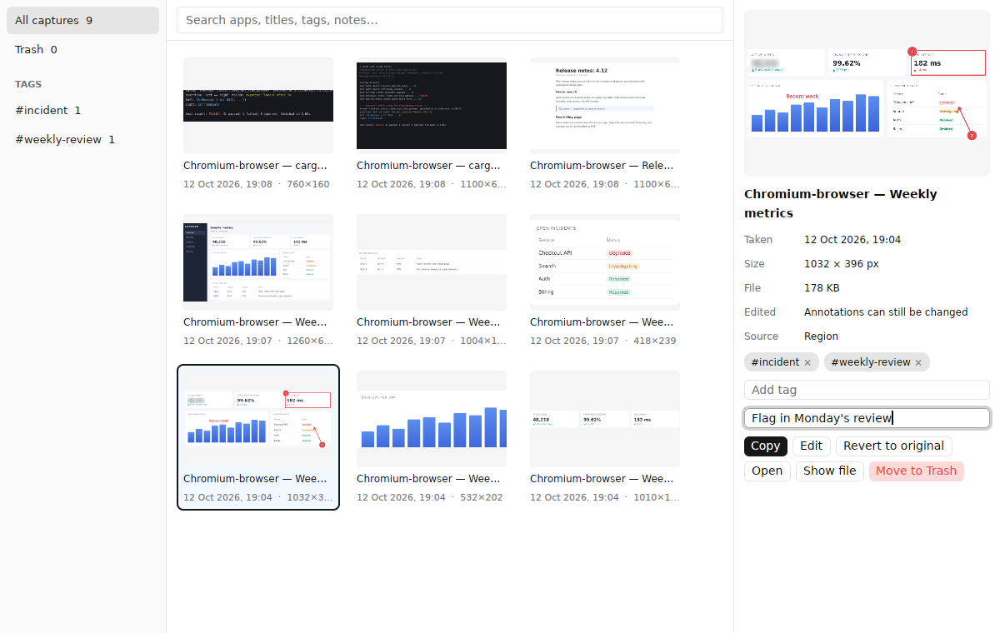
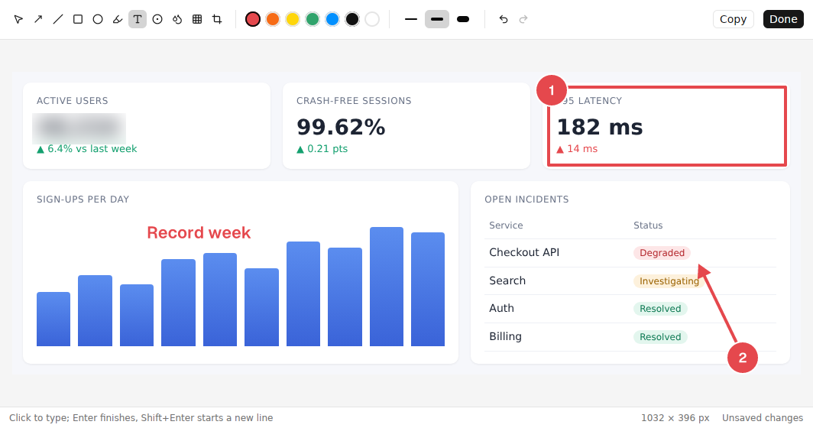

Screenshots at the speed of thought.
Press one key and the overlay is already there. Drag, release, and the shot is on your clipboard, saved, and filed in a library you can actually search. No lag, no clutter, no lost captures.
Press Ctrl Shift 2 (⌘ Shift 2 on a Mac) and you're capturing.

Built for the hundredth screenshot of the day.
Most capture tools are fine the first time. Snapwright is designed for people who capture all day: engineers filing bugs, designers giving feedback, support teams writing guides.
Capture without breaking flow
Snapwright stays warm in the background, so the overlay appears the instant you press the hotkey. Your screen freezes, you pick a region, and you're done.
- Hover to snap to any window, click to take it
- Pixel-perfect nudging with the arrow keys
- A colour loupe that copies any pixel as hex
- Copied and saved the moment you let go

Every capture, instantly findable
Snapwright remembers what you captured and where it came from. Each shot lands in the library with the app, window title, display and time, so "that error from Tuesday" is one search away.
- Full-text search across apps, titles, tags and notes
- Tags and notes on any capture
- Trash with restore, so nothing is lost by accident
- Content-addressed storage: duplicates cost nothing

Say it with arrows
A focused editor with the tools you actually reach for: arrows, shapes, highlighter, text, numbered steps, blur and pixelate for anything private, and crop. Every tool is one key away.
- Non-destructive: the original is never touched
- Unlimited undo and redo
- Revert to the original at any time
- Redact secrets before they leave your screen

Everything a capture needs. Nothing it doesn't.
Small, sharp tools that work together, all in a single native app.
Instant overlay
A warm GPU pipeline and per-display overlays mean no spinner, no flash, no wait.
Repeat last region
Capture the same area again with one hotkey and no overlay. Perfect for before-and-after shots.
Delayed capture
Start a countdown from the tray to catch menus, hovers and tooltips.
Quick-access preview
A preview pops up after each capture. Click to open it, or jump straight into the editor.
Searchable library
SQLite full-text search over every capture's app, window title, tags and notes.
Blur and pixelate
Hide passwords, emails and tokens before you share. Your capture, your privacy.
Native on every desk.
One codebase in Rust, using each operating system's fastest capture path. No Electron, no web view.
macOS
ScreenCaptureKit, the modern capture API, with Retina scaling handled for you.
Universal app for Apple silicon and IntelWindows
DXGI Desktop Duplication with per-monitor DPI awareness, straight from the GPU.
Windows 10 and 11Linux
X11 shared-memory capture. A full 1440p grab takes about 4 ms. Wayland is on the way.
AppImageTake your next screenshot faster.
Snapwright is in early preview. Grab a build, press the hotkey, and feel the difference.